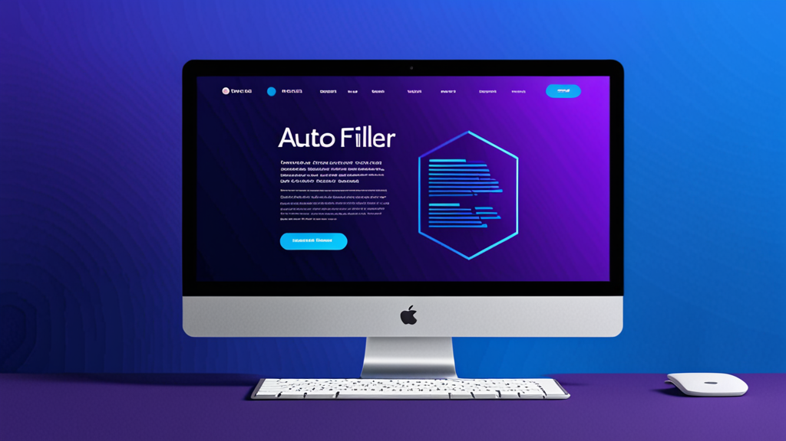

Лучший AI-филлер для заполнения заявок на работу: экономьте время и избегайте ошибок
Если вы хоть раз проводили субботний вечер, переписывая свою трудовую биографию в десятое онлайн-заявление за день, вы знаете эту боль. Пальцы ноют. Вы снова делаете ошибку в названии предыдущего работодателя. Каждое поле кажется маленьким налогом на ваше терпение.
Этот повторяющийся ввод данных — не просто раздражение. Он стоит вам возможностей. Исследования показывают, что 60% соискателей бросают заявки на полпути, если формы занимают слишком много времени. Решение — не печатать быстрее. А работать умнее.
Вот как лучший AI-филлер для заявок на работу может превратить часы рутины в минуты, и на что обратить внимание при выборе.
Почему обычная автозаполнение не подходит для заявок на работу
Автозаполнение браузера отлично работает для адреса и кредитной карты. Но заявки на работу — совсем другое дело. Они запрашивают:
- Несколько предыдущих должностей с датами, обязанностями и причинами ухода
- Образование с GPA, специальностями и годами выпуска
- Списки навыков, которые меняются в зависимости от должности
- Открытые вопросы вроде "Почему вы хотите эту работу?"
Обычное автозаполнение с этим не справляется. Оно заполняет имя и номер телефона, а затем оставляет вас смотреть на 15 пустых полей. В итоге вы всё равно копируете и вставляете из Word-документа.
AI-филлер решает эту проблему иначе. Он не просто хранит статичный текст. Он понимает контекст.
Что делает AI-филлер действительно полезным
Не все филлеры одинаковы. Вот что отличает полезные от тех, которые вы удалите через неделю.
Заполнение на основе профиля для стандартных полей
Основная функция проста: вы один раз создаете профиль с именем, email, телефоном, адресом и историей работы. Когда вы попадаете на заявку, расширение распознает эти поля и мгновенно их заполняет. Никакого копирования. Никаких опечаток.
Только это экономит 5–10 минут на одну заявку. Если вы подаетесь на 20 вакансий, это более трех часов сэкономленного времени.
AI-ответы на открытые вопросы
Настоящая магия происходит с текстовыми полями. Хороший AI-филлер не просто вставляет шаблонный текст. Он анализирует вопрос и генерирует релевантный ответ.
Например:
- Вопрос: "Опишите случай, когда вы разрешили конфликт на работе."
- Ответ AI: Извлекает из вашего сохраненного опыта, форматирует как короткий абзац по методу STAR и вставляет.
Вы можете отредактировать ответ перед отправкой, но основная работа уже сделана.
Конфиденциальность важнее, чем вы думаете
Когда вы заполняете заявки, вы делитесь чувствительными данными: номерами социального страхования (для проверок), адресами, трудовой историей. Последнее, что вам нужно — чтобы эти данные ушли на облачный сервер, который вы не контролируете.
Лучший AI-филлер для заявок на работу обрабатывает всё локально. Ваши данные остаются в вашем браузере. Никаких загрузок, никаких сторонних серверов, никакого риска утечки.
Как эффективно использовать AI-филлер
Чтобы получить максимум от таких инструментов, требуется небольшая настройка. Вот рабочий процесс.
Шаг 1: Создайте полный профиль
Не торопитесь. Потратьте 20 минут на создание подробного профиля:
- Полное имя, email, телефон, адрес
- 2–3 предыдущие должности с названиями компаний, датами и 2–3 пунктами по каждой
- Образование с названиями учебных заведений, степенями и годами выпуска
- Список из 10–15 релевантных навыков
- Краткое профессиональное резюме (2–3 предложения)
Чем больше деталей вы добавите, тем лучше будут ответы AI.
Шаг 2: Используйте шаблоны для повторяющихся вопросов
Многие заявки задают похожие вопросы: "Почему вас интересует эта должность?" или "Каковы ваши ожидания по зарплате?" Сохраните 3–4 шаблонных ответа в профиле. AI сможет немного адаптировать их под название компании или должность, которые обнаружит на странице.
Шаг 3: Всегда проверяйте перед отправкой
AI хорош, но не идеален. Он может неправильно истолковать вопрос или сгенерировать что-то, что звучит неестественно. Читайте каждый AI-ответ перед отправкой. Это занимает 30 секунд на заявку и предотвращает неловкие ошибки.
Шаг 4: Отслеживайте, какие заявки вы уже отправили
Некоторые филлеры ведут журнал сайтов, где вы их использовали. Это помогает избежать повторной подачи в ту же компанию. Если вашего филлера такой функции нет, ведите простую таблицу.
Кому ещё это полезно: не только соискателям
Соискатели — очевидная аудитория, но тот же инструмент работает и для других повторяющихся форм.
Медицинский персонал
Формы приема пациентов запрашивают одну и ту же информацию: имя, страховую компанию, историю болезни, текущие лекарства. AI-филлер может заполнять их из сохраненного профиля, сокращая время регистрации с 10 минут до 2.
Специалисты по страховым выплатам
Страховые формы notoriously повторяются. Имя страхователя, номер полиса, дата убытка, описание ущерба. Филлер уменьшает количество ошибок ввода и ускоряет обработку.
Фрилансеры и консультанты
Предложения и контракты требуют вашего имени, адреса бизнеса, описания услуг и цен. Вместо того чтобы перепечатывать это для каждого клиента, позвольте AI обрабатывать шаблонные части, пока вы сосредоточены на индивидуальных.
Рекрутеры
Если вы просматриваете кандидатов и заполняете оценочные формы, расширение для автозаполнения может сэкономить время на повторяющихся полях: должность, отдел, дата собеседования.
На что обратить внимание при выборе расширения для Chrome
Если вы ищете AI-филлер, учитывайте эти критерии.
Локальная обработка
Ваши данные никогда не должны покидать ваше устройство. Ищите расширения, которые явно заявляют, что обрабатывают всё в браузере. Это не подлежит обсуждению для конфиденциальной информации.
Настраиваемые профили
Вам нужно больше одного профиля. Возможно, у вас есть профиль для заявок на работу и другой для предложений фрилансера. Расширение должно позволять легко переключаться между ними.
Точность распознавания полей
Лучшие расширения распознают поля, даже если сайты используют нестандартные метки. "Имя" должно заполняться, независимо от того, называется ли поле "firstName", "fname" или "given-name".
Минимум разрешений
Некоторые филлеры запрашивают доступ ко всем данным вашего браузера. Это тревожный сигнал. Хорошему расширению нужен доступ только к полям форм и странице, с которой вы работаете.
Распространенные ошибки
Даже с отличным инструментом можно навредить себе. Избегайте этих ловушек.
Чрезмерная reliance на AI-ответы
AI может написать достойный ответ на вопрос "Почему вы хотите эту работу?", но он не передаст вашу искреннюю заинтересованность или конкретные знания о компании. Используйте AI как отправную точку, а затем персонализируйте.
Необновление профиля
Ваши навыки растут. Ваша трудовая история меняется. Если вы не обновляете профиль каждые несколько месяцев, AI будет генерировать устаревшие ответы.
Игнорирование форматирования
Некоторые порталы заявок удаляют форматирование из вставленного текста. Если ваш AI-ответ использует маркированные списки или жирный текст, после отправки он может выглядеть как мешанина. Для безопасности используйте обычный текст.
Сравнение: AI-филлер vs. Ручной ввод
| Задача | Ручной ввод | С AI-филлером |
|---|---|---|
| Базовая информация (имя, email) | 30 секунд | 1 секунда |
| История работы (3 должности) | 5–7 минут | 30 секунд |
| Открытые вопросы (3 вопроса) | 10–15 минут | 2 минуты |
| Проверка и отправка | 2 минуты | 2 минуты |
| Итого на заявку | 17–24 минуты | 5 минут |
Эта разница в 12–19 минут на заявку быстро накапливается. Подайтесь на 50 вакансий — и вы сэкономите 10–16 часов.
Почему это особенно важно в 2025 году
Рынок труда конкурентен. Компании используют AI для проверки резюме и автоматического отклонения кандидатов, не соответствующих ключевым словам. Чем быстрее вы отправляете заявки, тем больше вакансий можете охватить.
Но скорость без точности бесполезна. AI-филлер, который делает ошибки — путает даты, неправильно интерпретирует поля — навредит вашим шансам. Поэтому сначала протестируйте инструмент на нескольких не самых важных заявках.
Как сделать выбор
Вам не нужно тратить часы на изучение каждого филлера. Сосредоточьтесь на трех вещах: конфиденциальность, точность и простота настройки. Если расширение соответствует этим критериям, его стоит попробовать.
Для соискателей лучший AI-филлер для заявок на работу — тот, который обрабатывает как стандартные поля, так и открытые вопросы, не отправляя ваши данные в облако. Такое сочетание скорости и конфиденциальности встречается редко, но оно существует.
Если хотите увидеть пример качественного решения, взгляните на Autofill AI. Он использует AI, который работает полностью в вашем браузере — ваши данные никогда не попадают на сервер. Вы можете заполнять стандартные поля из сохраненного профиля и генерировать ответы на открытые вопросы с помощью локального AI или собственного API-ключа. Он создан именно для той повторяющейся работы с формами, которая отнимает ваше время.
Но независимо от того, какой инструмент вы выберете, принцип один: перестаньте относиться к заполнению форм как к неизбежному злу. Автоматизируйте скучные части. Берегите энергию для того, что действительно важно — например, для успешного прохождения собеседования.